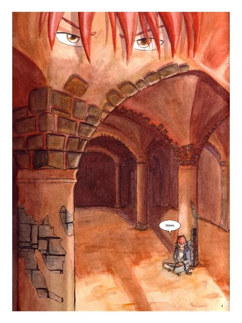
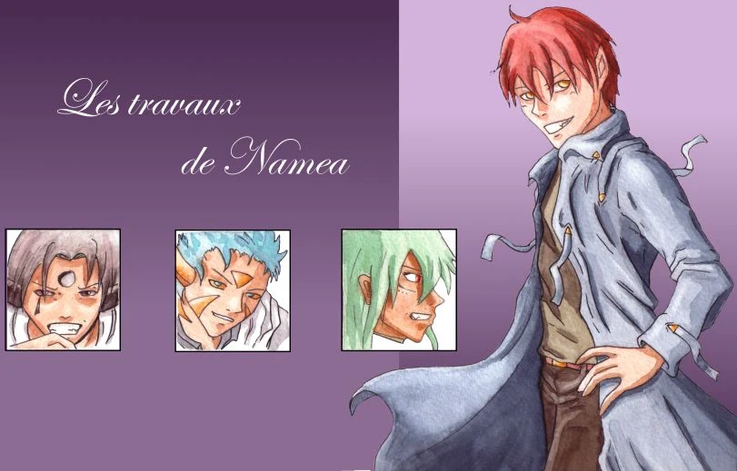
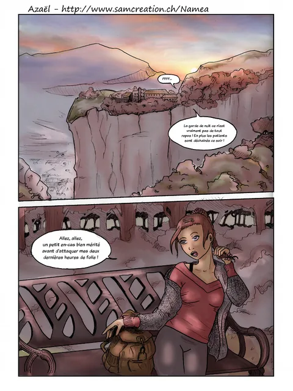
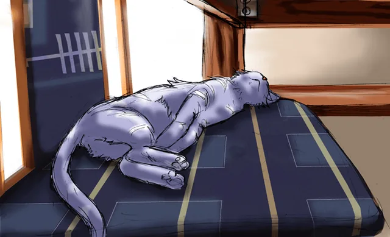
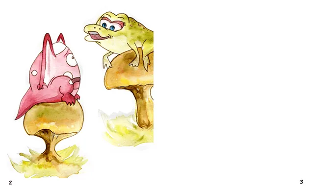
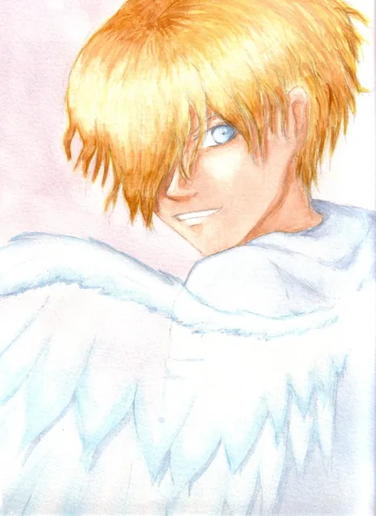
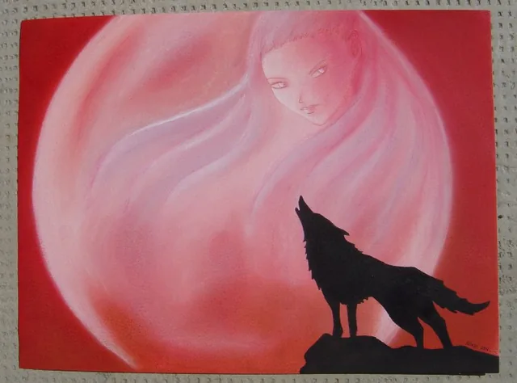
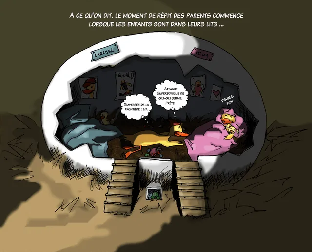

BD fantasy
Globus Cruciger
Inaki vient de terminer ses études de magie. Lorsque l’Orbe sacrée choisit son maître, son destin prend un tournant inattendu.
Les univers illustrés d’Anne
Je signe mes dessins sous le nom de Namea. Découvrez mes bandes dessinées de fantasy, mes albums illustrés pour enfants et mes galeries de dessins.
Lecture gratuite · BD, aquarelles et illustrations

Deux univers de bande dessinée, avec leurs planches et les recherches qui les accompagnent.

Inaki vient de terminer ses études de magie. Lorsque l’Orbe sacrée choisit son maître, son destin prend un tournant inattendu.

Un vampire pas tout à fait comme les autres. Découvrez l’ancienne version, les premières planches de la nouvelle et les recherches graphiques.
Un bal masqué, un petit chat et un minuscule dinosaure : des histoires en images.
À Maxiville, Capucine la girafe cherche le courage de rejoindre le grand bal masqué.

Minette se cache : illustrations, essais de couleur et crayonnés pour un projet d’album.

Un dinosaure vraiment minuscule rêve simplement d’avoir un ami.
Couleurs douces, portraits et dessins d’humour : une sélection de mes autres créations.

Portraits, animaux, paysages et inspirations poétiques.

Illustrations traditionnelles et numériques, essais et recherches.

Un petit canard et quelques dessins humoristiques.
Le site Namea réunit mes créations. Les Contes d’Aelysse sont le manga de mon amie Sandrine, qui dessine sous le nom d’Haudryane.